Das Programm Bilder hilft Ihnen, Ihre Bilder zu kennzeichnen ("taggen") und schnell zu finden.
Ihnen stehen unter anderem folgende Eingabehilfen zur Verfügung:
Landschaft, falls Sie Baum zuordnen
Die Bilder können Sie:
Gefunden werden die Bilder über verschiedene Merkmale wie Stichwörter, Kategorien und Aufnahmeorte. Diese Daten werden als Metadaten bezeichnet und Sie können die Metadaten im Programm Bilder eingeben. Damit Sie möglichst wenig Arbeit haben, können Sie Vorlagen speichern mit immer wieder benutzten Angaben, z.B. Ihre Kontaktdaten und das Copyright. Haben Sie mehrere Bilder ausgewählt, werden Ihre Eingaben für alle Bilder gespeichert. Ihre bisherigen Eingaben werden vorgeschlagen, während Sie neue Begriffe eingeben.
Was Sie eingeben, wird in eine
XMP-Filialdatei gespeichert.
Das ist eine Datei mit dem gleichen Namen wie das Bild und der
Endung xmp. Heißt ein Bild Blume.jpg, ist
seine Filialdatei Blume.xmp. Alle Filialdateien sind im
gleichen Ordner gespeichert wie das Bild. Zusätzlich werden Ihre
Eingaben in eine Datenbank geschrieben und so
schnell gefunden.
Auch die Vorschaubilder sind im gleichen Ordner gespeichert wie die Datenbank, damit sie schnell angezeigt werden.
Wurden ein Bild oder seine Filialdatei aktualisiert außerhalb dieses Programms, werden das Vorschaubild und/oder die Metadaten in der Datenbank automatisch erneuert.
Falls Sie die Metadaten zusätzlich in Ihren Bildern haben wollen, erreichen Sie das mit einem Skript (Beispiel-Skript).
Die Filialdateien und XMP haben die Vorteile:
Es werden zusätzlich IPTC-Daten angezeigt. Diese können Sie nach XMP kopieren. IPTC ist ein älterer Standard und die Daten stehen in den Bildern.
In Bildern enthaltene - eingebettete - XMP-Daten werden angezeigt, falls keine XMP-Filialdatei existiert und können ebenfalls in XMP-Filialdateien exportiert werden.
Außerdem werden EXIF-Daten angezeigt und nach einigen kann gesucht werden. Die EXIF-Daten schreibt Ihre Kamera in die Bilder: Aufnahmedatum, Brennweite, Verschlusszeit, ...
Stellen Sie bitte zuerst das Programm ein über das Menü Bearbeiten > Einstellungen. Es öffnet sich der Einstellungen-Dialog. Haben Sie alles eingestellt, können Sie Bilder in die Datenbank einlesen lassen und anschließend danach suchen.
Einmal eingelesen, werden die Vorschaubilder schneller angezeigt. Das Einlesen kann auf verschiedene Weisen geschehen:
Erst nach dem Einlesen kann nach Bildern gesucht werden, die bereits Metadaten enthalten. Metadaten, die Sie ins Programm Bilder eingeben und dort abspeichern, werden sofort in die Datenbank geschrieben und bei eine Suche berücksichtigt.
Sind in Ihren Bildern IPTC-Daten eingebettet, können Sie diese übernehmen lassen. Das gleiche gilt für eingebettete XMP-Daten. Diese lassen sich auch automatisch übernehmen.
Das Programmfenster ist aufgeteilt in vier Bereiche:
Oben links und rechts des Vorschaubildfensters sind je zwei kleine Dreiecke eingezeichnet. Klicken Sie auf das Dreieck, dessen Spitze nach außen zeigt, wird das Vorschaubildfenster in diese Richtung vergrößert, auf der linken Seite werden die Auswahlkartenreiter überdeckt, auf der rechten Seite die Metadatenkartenreiter. Durch Klicken auf den Pfeil nach innen wird das Vorschaubildfenster wieder verkleinert.
Geben Sie beispielsweise Stichwörter ein, können Sie die linke Seite vergrößern und sehen so mehr Vorschaubilder.
Alle Befehle gelten für eine Auswahl, werden nur auf diese angewendet. Die Vorschaubilder in der Mitte können Sie mit der Maus auswählen:
Mit dem Regler unten links können Sie die Größe der Vorschaubilder einstellen zwischen 10 % und 100 % der eingelesenen Größe in Schritten von 10 %. Gute Qualität erzielen Sie, wenn Sie die Vorschaubilder groß einlesen lassen und für mehr Übersicht verkleinern.
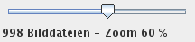
Die Fortschrittsanzeigen verdeutlichen, wie weit bestimmte Aufgaben erledigt sind. Die rechte obere zeigt den Fortschritt automatisierter Aufgaben an, die darunter, was Sie veranlassten, beispielsweise das Drehen von Vorschaubildern, und die linke, wie weit die Vorschaubilder der Fenstermitte in die Datenbank eingelesen wurden.

Sie können in das Eingabefeld am unteren Fensterrand einen Suchtext eingeben. Nachdem Sie die Enter-Taste (Return) gedrückt haben, wird nach dem Text gesucht, den Sie eingegeben haben. Ihre Eingaben werden automatisch vervollständigt anhand gepseicherter Metadaten. Tipp: Mit der Tastenkombination Strg+F springen Sie schnell in das Suchen-Eingabefeld.

Die Schaltfläche mit dem grünen Häkchen links von Suchen öffnet die Protokolldatei. Dies kann wichtig sein, falls ein rotes Kreuz anzeigt wird anstelle des grünen Häkchens: Dann verlief etwas, wie es nicht sollte.
Die Schaltfläche Ausgabe öffnet ein Fenster mit den Texten, die von Bilder in die Ausgabe des Betriebssystems geschrieben wurden.
Klicken Sie mit der rechten Maustaste, klappen manchmal Kontextmenüs auf neben dem Mauszeiger und zeigen Optionen für das, was sie auswählten ("markierten") im aktiven Fenster. Bedingungen:
Sie wählen zuerst mit der linken Maustaste etwas aus und klicken dann die rechte. Unten sind zwei Kontextmenüs abgebildet.
Ist das Fenster mit den Vorschaubildern ausgewählt, wird das Kontextmenü für die Vorschaubilder angezeigt.

Kontextmenü im Fenster mit den Vorschaubildern
Ist das Fenster mit den gespeicherten Suchen ausgewählt, öffnet sich das Kontextmenü mit Aktionen für gespeicherte Suchen.
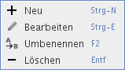
Kontextmenü im Fenster mit den gespeicherten Suchen
Im Kartenreiter Ordner sehen Sie die Ordner Ihres Computers. Klicken Sie mit der linken Maustaste auf einen Ordner, in dem Bilder sind, werden Vorschauen davon angezeigt im mittleren Fensterbereich.
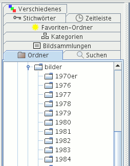
Haben Sie einen Ordner ausgewählt und klicken mit der rechten Maustaste darauf, öffnet sich ein Kontextmenü mit verschiedenen Aktionen.
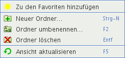
Im Kartenreiter Suchen sehen Sie Ihre gespeicherten Suchen. Eine gespeicherte Suche enthält stets die aktuellen Bilder mit bestimmten Eigenschaften, beispielsweise alle Bilder, auf denen Ihr Freund zu sehen ist.
Klicken Sie mit der linken Maustaste auf eine Suche, werden in der Mitte gefundene Vorschaubilder angezeigt. Die rechte Maustaste zeigt ein Kontextmenü mit verschiedenen Optionen wie das Umbenennen oder Bearbeiten einer Suche.
Im Kartenreiter Bildsammlungen können Sie Bildsammlungen auswählen. Eine Bildsammlung ist eine beliebige Auswahl von Bildern, beispielsweise alle Bilder Ihrer letzten Reise, Ihre besten Landschaftsfotos, Fotos, die Sie demnächst ausdrucken wollen. Sie können die Reihenfolge der Bilder in einer Bildsammlung ändern durch Ziehen und Ablegen.

Klicken Sie mit der linken Maustaste auf eine Bildsammlung, werden in der Fenstermitte Vorschaubilder dieser Sammlung angezeigt. Die rechte Maustaste zeigt ein Kontextmenü mit verschiedenen Optionen.

In die Bildsammlung Zuletzt importiert werden automatisch die Bilder eingefügt, die Sie von einer Kameraspeicherkarte kopierten.
Wählen Sie Bilder aus und drücken anschließend die Taste P (englisch: "Pick"), werden die Bilder in die Bildsammlung Ausgewählt eingefügt. Sie können auch das Kontextmenü des Vorschaubildfensters benutzen: Hinzufügen zu Ausgewählt.
Hier können Sie Bilder sammeln, die Sie in Erwägung ziehen für einen bestimmten Zweck, z.B. zum Behalten nach einem Import von der Kameraspeicherkarte, für ein Fotobuch, zur Veröffentlichung im Web etc. Nach und nach füllen Sie die Sammlung und entfernen wieder ungeeignete Bilder mit der Taste Entf.
Benötigen Sie den Inhalt nicht mehr oder wollen die Bildsammlung erneut befüllen, können Sie die Bilder auswählen und entfernen mit der Taste Entf; von der Festplatte werden diese so nicht gelöscht.
Wählen Sie Bilder aus und drücken anschließend die Taste R (englisch: "Reject"), werden die Bilder in die Bildsammlung Verworfen eingefügt. Sie können auch das Kontextmenü des Vorschaubildfensters benutzen: Hinzufügen zu Verworfen.
Hier können Sie Bilder sammeln, die Sie nicht mehr wollen, aber noch einmal überprüfen möchten, bevor Sie diese von der Festplatte löschen. Nach und nach füllen Sie die Sammlung und entfernen wieder Bilder, die Sie doch behalten wollen, mit der Taste Entf.
Von der Festplatte löschen Sie die Bilder über das Kontextmenü des Vorschaubildfensters: Vom Datenträger löschen.
Im Kartenreiter Kategorien sehen Sie alle Kategorien, die Sie in die XMP-Metadaten eingaben.

Klicken Sie mit der linken Maustaste auf eine Kategorie, werden in der Fenstermitte alle Bilder mit dieser Kategorie angezeigt. Es gibt kein Kontextmenü für Kategorien.
Im Kartenreiter Stichwörter werden alle Stichwörter angezeigt, die Sie Ihren Bildern zuordneten. Klicken Sie auf ein Stichwort, werden alle Bilder mit diesem Stichwort angezeigt.

Es gibt kein Kontextmenü für diesen Kartenreiter.
Der Kartenreiter Favoriten-Ordner zeigt Lesezeichen für alle Ordner, die Sie häufig benötigen und deswegen hier abgelegt haben. Der Vorteil gegenüber dem Ordner-Kartenreiter ist:
Klicken Sie mit der linken Maustaste auf ein Lesezeichen, werden Vorschaubilder angezeigt für alle Bilder dieses Ordners. Mit der rechten Maustaste erhalten Sie ein Kontextmenü mit verschiedenen Optionen wie dem Bearbeiten, Verschieben oder Löschen des Favoriten-Ordners (aus dem Kartenreiter, nicht aus dem Dateisystem).
Im Kartenreiter Zeitleiste werden alle Zeitpunkte angezeigt, an denen Sie Bilder fotografierten (und nur diese). Wählen Sie ein Jahr aus, werden alle Bilder dieses Jahres angezeigt, bei einem Monat alle Bilder dieses Monats und bei einem Tag alle Bilder dieses Tages.
Voraussetzung: Die Bilder wurden eingelesen in die Datenbank und enthalten EXIF-Metadaten, in denen der Aufnahmezeitpunkt steht.
Bilder in der Datenbank ohne EXIF-Metadaten mit dem Aufnahmezeitpunkt sind zusammengefasst unter dem Symbol Ohne EXIF-Datum. Das sind Bilder ohne EXIF-Metadaten oder mit EXIF-Metadaten ohne Aufnahmezeitpunkt.
Es gibt kein Kontextmenü für diesen Kartenreiter.
Im Kartenreiter Verschiedenes werden ausgewählte Metadaten angezeigt, die nicht in den anderen Kartenreitern vorkommen. Dieser könnte zukünftig erweitert werden.
Unter Fototechnik stehen Daten, die Ihre Kameras in die Bilder schrieben.
Voraussetzung: Die Bilder wurden eingelesen in die Datenbank und enthalten EXIF-Metadaten, in denen die einzelnen Attribute stehen, die folgend aufgelistet werden:
Unter dem Symbol Kamera sehen Sie die verschiedenen Kameras, die in der Datenbank gespeichert sind. Klicken Sie auf ein Kamerasymbol, werden alle Bilder angezeigt, die Sie mit dieser Kamera fotografierten.
Unter dem Symbol Brennweite sehen Sie die verschiedenen Brennweiten, die in der Datenbank gespeichert sind. Klicken Sie auf ein Brennweitensymbol, werden alle Bilder angezeigt, die Sie mit dieser Brennweite fotografierten.
Unter dem Symbol ISO sehen Sie die verschiedenen ISO-Werte, die in der Datenbank gespeichert sind. Klicken Sie auf ein ISO-Symbol, werden alle Bilder angezeigt, die Sie mit dieser ISO-Einstellung fotografierten.
Unter Angaben zu den Bildern stehen Metadaten, die Sie oder andere in die Bilder schrieben und die nicht bereits in einem anderen Kartenreiter angezeigt werden.
Voraussetzung: Die Bilder wurden eingelesen in die Datenbank und enthalten Metadaten, in denen die einzelnen Attribute stehen, die folgend aufgelistet werden:
Unter Aufnahmeort stehen alle verschiedenen Aufnahmeorte. Klicken Sie einen Aufnahmeort an, werden alle Bilder angezeigt, die dort fotografiert wurden.
Unter Fotograf stehen alle verschiedenen Fotografen. Klicken Sie einen Fotografen an, werden alle Bilder angezeigt, die dieser Fotograf fotografierte.
Unter Copyright stehen alle verschiedenen Rechte am Bild. Klicken Sie eine Copyright an, werden alle Bilder angezeigt, die dieses Copyright besitzen.
Unter Eigentümer stehen alle verschiedenen Eigentümer der Bilder. Klicken Sie einen Eigentümer an, werden seine Bilder angezeigt.

Es gibt kein Kontextmenü für diesen Kartenreiter.
Im Kartenreiter Ohne Metadaten finden Sie Bilder in der Datenbank, denen noch keine Metadaten zugeordnet wurden, beispielsweise Bilder ohne Stichwörter oder ohne Kurzbeschreibung.

Es gibt kein Kontextmenü für diesen Kartenreiter.
Im Kartenreiter IPTC sehen Sie IPTC-Daten, die andere Programme in die Bilder schrieben. Daten mit farbigem Hintergrund werden in die Datenbank geschrieben und Sie können danach suchen, falls Sie das eingestellt haben.
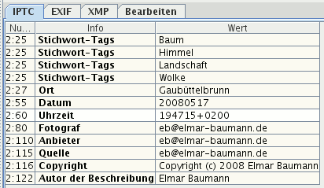
Im Kartenreiter EXIF sehen Sie Daten, die Ihre Digitalkamera in das Bild schrieb, das Sie auswählten im Vorschaubild-Fenster. Daten mit farbigem Hintergrund werden in die Datenbank geschrieben und Sie können danach suchen.
Sind GPS-Daten eingebettet, können Sie ein Satellitenfoto anzeigen lassen vom Aufnahmenstandort durch Betätigen der Schaltfläche Google Maps, sofern eine Verbindung zum Internet besteht.
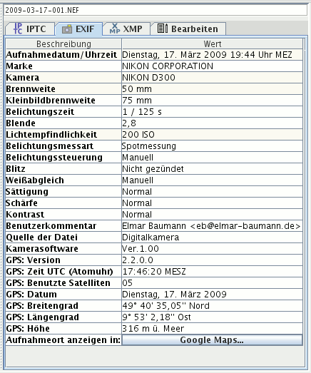
Im Kartenreiter XMP sehen Sie Daten, die Sie mit dem Programm Bilder in XMP-Filialdateien schrieben oder mit anderen Programmen wie Adobe Photoshop Lightroom. Daten mit farbigem Hintergrund werden in die Datenbank geschrieben und Sie können danach suchen.
Gibt es keine XMP-Filialdateien und es sind XMP-Daten eingebettet in die Bilddatei, werden diese angezeigt. Sie können diese auch in die Datenbank speichern lassen.
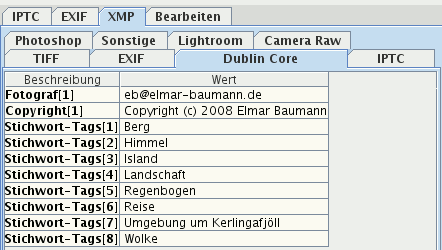
XMP-Daten können sehr umfangreich sein und sind deshalb auf verschiedene Kartenreiter verteilt, je XMP-Namensraum einer. Folgende Namensräume werden angezeigt:
Über den Kartenreiter Bearbeiten können Sie die Metadaten eines oder mehrerer Bilder gleichzeitig bearbeiten. Sie benötigen:
Ohne Schreibrechte sind die Eingabefelder dunkler und es steht am Ende im Kartenreiter Bearbeiten, dass Bearbeiten nicht möglich ist.

Ihre Daten werden gespeichert - in XMP-Filialdateien geschrieben, falls Sie ein anderes Bild auswählen oder das Programm beenden.
Die Schaltflächen links klappen Eingabefelder ein, falls sie ein Minus-Zeichen haben und aus bei einem Plus-Zeichen. Sie sparen Platz durch Einklappen der Felder, in die Sie nur selten eingeben.
Mit der Tabulator-Taste gehen Sie von Eingabefeld zu Eingabefeld. Ihnen wird in jedem Eingabefeld Text vorgeschlagen, den Sie dort einmal eingaben, falls er in der Datenbank steht.
Zeigen Sie mit der Maus etwas länger auf die Überschrift eines Eingabefelds, erscheint ein Werkzeugtipp (Tooltip) mit weiteren Informationen, was in das Eingabefeld hineingeschrieben werden soll.
Folgende Daten können mehrfach vorkommen:
Ein Bereich mit mehrfachen Daten ist zweigeteilt: Oben ist eine Liste mit den bisherigen Eingaben, unten ein einzeiliges Eingabefeld.
Geben Sie Daten in das einzeilige Eingabefeld ein und drücken die Enter-Taste oder klicken mit der Maus auf die Plus-Schaltfläche (+), wird Ihre Eingabe in die Liste übernommen, falls sie dort nicht existiert.
Wollen Sie Einträge aus der Liste löschen, wählen Sie einen Eintrag aus oder mehrere und klicken auf die Minus-Schaltfläche (-). Sie können auch das Kontextmenü benutzen (rechte Maustaste).
Wollen Sie einen Eintrag in der Liste umbenennen oder mehrere, wählen Sie die Einträge aus, klicken mit der rechten Maustaste und wählen aus dem Kontextmenü "Umbenennen".
Wählen Sie (genau) ein Bild aus, werden dessen Metadaten angezeigt. Durch Entfernen aus den Eingabefeldern und Listen löschen Sie Daten.
Wählen Sie mehrere Bilder aus, werden die gemeinsamen Metadaten angezeigt.
Ist ein Feld leer und Sie geben Text ein, wird er allen Bildern zugewiesen, der bisherige Text wird ersetzt, falls dieser nur einmal vorkommt, wie der Name des Fotografen, das Copyright, der Aufnahmeort.
Geben Sie Text ein in Felder mit sich wiederholenden Metadaten - Stichwörter und weitere Kategorien - wird dieser allen ausgewählten Bildern hinzugefügt, sofern er dort nicht existiert.
Was Sie umbenennen oder löschen, wird in den Metadaten aller ausgewählten Bilder umbenannt oder gelöscht.
Vorlagen sind Metadaten, die Sie immer wieder benötigen. Einmal abgespeichert mit der Tastenkombination Alt+V oder Mausklick auf die Schaltfläche Als Vorlage speichern, werden sie in die Eingabefelder eingefügt durch die Tastenkombination Alt+E oder Klick auf die Schaltfläche Vorlage einfügen im Kartenreiter Bearbeiten. Der Name der aktuellen Vorlage wird angezeigt im Dropdown-Listenfeld des Kartenreiters Vorlagen.
Für eine Vorlage eignen sich besonders Copyright, Adresse des Fotografen und Stichwörter, die Sie immer wieder benutzen.
Die Bedeutung der anderen Schaltflächen, in den Klammern stehen die Tastenkombinationen:
Die Tastenkombinationen funktionieren nur, wenn der Kartenreiter mit den entsprechenden Schaltflächen ausgewählt ist.
Hierarchische Stichwörter können anderen Stichwörtern über- und untergeordnet sein. In der Abbildung unten ist Landschaft folgenden Stichwörtern übergeordnet: Bach, Baum und Himmel. Das Stichwort Baum ist Birke und Buche übergeordnet.
Tippen Sie im Kartenreiter Bearbeiten ein Stichwort ein und drücken die Tasten Strg+K, wird ein Dialog angezeigt, der alle übergeordneten Stichwörter des eingegebenen Stichworts anzeigt. Diese können Sie eintragen lassen. Anstelle Strg+K können Sie die Schaltfläche mit dem K betätigen. K steht für Keyword, dem englischen Begriff für Stichwort (Schlüsselwort). In der Abbildung unten ist diese Schaltfläche rot umrandet.
Sie können alle Stichwörter eintragen lassen, einzelne oder keine. Wollen Sie nur einzelne eintragen lassen, wählen Sie diese aus im Dialog und betätigen die Schaltfläche Markierte auswählen .
Jedes neu angelegte Stichwort ein "echtes": Es wird für eine Übernahme vorgeschlagen. Wollen Sie ein Stichwort nur zum Ordnen benutzen, wählen Sie es aus, klicken die rechte Maustaste und wählen aus dem Kontextmenü: Umschalten: Echt. Aus einem "echten" Schlüsselwort wird eines, das Sie zum Ordnen benutzen können und umgekehrt.
In der ersten oberen Abbildung ist das Stichwort Favoritenbäume eines, das nur der Ordnung dient, beispielsweise für einen schnellen Zugriff. Es wird nicht zur Übernahme vorgeschlagen. Geben Sie ins Stichwort-Eingabefeld Buche ein, werden nur die übergeordneten Stichwörter Baum und Landschaft zur Auswahl angeboten.
Wählen Sie ein Stichwort aus, klicken mit der rechten Maustaste und wählen Hinzufügen zu ausgewählten Bildern. Das ausgewählte Stichwort und seine übergeordneten Stichwörter werden darauf hin eingetragen in den Kartenreiter Bearbeiten. Sie können auch die Tastenkombination Strg+B drücken.
Sie können ein neues Stichwort auf folgende Arten hinzufügen:
Sie ändern den Namen eines Stichworts auf zwei Arten:
Sie löschen ein Stichwort auf zwei Arten:
Klicken Sie mit der linken Maustaste auf ein Stichwort, ziehen es zu einem anderen Stichwort und lassen es dort fallen.
Die hierarchischen Stichwörter werden nicht als Hierarchie in die Filialdateien geschrieben, sondern einzeln, da es keinen Standard gibt, der garantiert, dass andere Programme die Hierarchie (richtig) einlesen.
Dieser Befehl aktualisiert im den
Datenbankordner
untergeordneten Ordner thumbnails die
Vorschaubilder der ausgewählten Bilder.
Sinnvoll ist das:
Dieser Befehl aktualisiert in der Datenbank die XMP- und EXIF-Metadaten der ausgewählten Bilder. Sinnvoll ist das, falls die Metadaten außerhalb des Programms Bilder modifiziert wurden und Sie nicht warten wollen, bis die Datenbank automatisch aktualisiert wird.
Mit diesem Befehl entfernen Sie die ausgewählten Bilder aus der Datenbank, nicht von der Festplatte. Das ist (lediglich) sinnvoll, wenn Sie außerhalb des Programms diese Bilder löschten oder verschoben.
Sie können das auch (bequemer) erledigen lassen über das Menü Datei > Datenbank, Kartenreiter Wartung oder automatisiert.
Dieser Befehl öffnet die ausgewählten Bilder mit dem Standard-Programm (für Doppelklicks), das Sie im Einstellungen-Dialog definierten.
Dieser Befehl öffnet die ausgewählten Bilder mit einem der weiteren Programme, die Sie im Einstellungen-Dialog definierten.
Mit diesem Befehl erzeugen Sie eine neue Bildsammlung aus den ausgewählten Bildern. Sie erscheint im Kartenreiter Bildsammlungen.
Mit diesem Befehl fügen Sie einer existierenden Bildsammlung die ausgewählten Bilder hinzu.
Mit diesem Befehl entfernen Sie die ausgewählten Bilder aus einer Bildsammlung, sofern gerade eine Bildsammlung angezeigt wird.
Mit diesen Befehlen drehen Sie die ausgewählten Vorschaubilder im Uhrzeigersinn um 90, 180 oder 270°. Die Bilddatei wird nicht verändert, nur das Vorschaubild im Datenbankordner.
Dieser Befehl öffnet einen Dialog, mit dem Sie alle ausgewählten Bilder in einen Ordner kopieren können, beispielsweise zum Hochladen an ein Fotolabor oder auf einen Webserver.

Dieser Befehl gibt den ausgewählten Bildern einen neuen Namen auf dem Datenträger. Sie können jede ausgewählte Datei einzeln umbenennen oder alle auf einmal mit einer Schablone.
Hier geben Sie für jede Datei einen neuen Namen ein, der Dialog zeigt nach jeder Umbenennung die nächste ausgewählte Datei an.
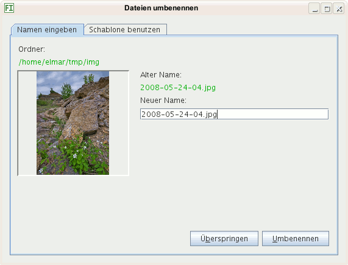
Mit der Schablone können Sie alle ausgewählten Dateien auf einmal einheitlich umbenennen lassen anhand einer Schablone. Sie können bis zu drei Bestandteile des Namens bestimmen:
001
vergeben, für das zweite 002, für das dritte
003 usw. Erhöhen Sie die Schrittweite auf 2, hat
das erste Bild die Ziffernfolge 001, das zweite
003 und das dritte 005.
Unten im Beispiel sehen Sie, wie die erste der ausgewählten Bilddateien nach dem Umbenennen heißt.
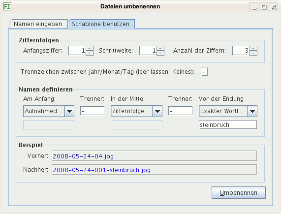
Dieser Befehl verschiebt die ausgewählten Bilder in einen anderen Ordner auf dem Datenträger.
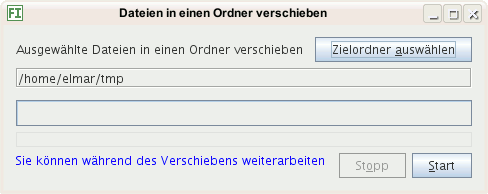
Dieser Befehl löscht (unwiderruflich!) die ausgewählten Bilder vom Datenträger: Einer Festplatte, einem USB-Stick usw.
Über diesen Dialog können Sie Ordner nach Bildern durchsuchen lassen und so die Datenbank mit Metadaten aktualisieren.
Dieser Menübefehl öffnet einen Dialog mit Informationen über die Datenbank und Möglichkeiten zur Wartung.
Auf dem Info-Kartenreiter sehen Sie, welche Daten enthalten sind in wie vielen Datensätzen. In der Abbildung unten gibt es 50.670 Datensätze mit Stichwörtern. Die Spalte Was zeigt die Art der Daten an, die Spalte Unterschiedliche, wie viele unterschiedliche Daten dieser Art es gibt und die Spalte Insgesamt, in wievielen Datensätzen Daten dieser Art enthalten sind. Beispielsweise könnten Kategorien in 1.000 Datensätzen gespeichert sein, aber es gibt nur 50 unterschiedliche Kategorien, falls mehrere Bilder gleichen Kategorien zugeordnet sind, was praktisch immer der Fall ist (sofern Sie Kategorien benutzen).
Die Anzahl aller Bilder in der Datenbank stehen neben dem Dateinamen.
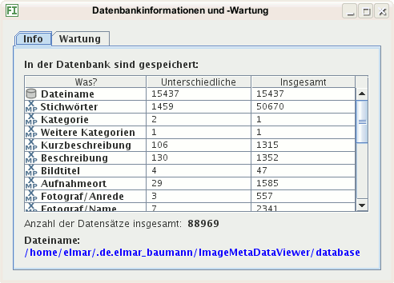
Der Kartenreiter Wartung bietet an, Datensätze zu entfernen, für die es keine Bilder mehr gibt. Das ist sinnvoll, sonst werden bei Suchen nicht mehr existierende Bilder berücksichtigt.
Nicht mehr benötigte Vorschaubilder löschen löscht Vorschaubilder, für die in der Datenbank keine Bilddateien gespeichert sind. Diese belegen unnötig Platz auf der Festplatte.
Das Komprimieren der Datenbank verkleinert ihre Dateigröße. Dies ist in der Regel nicht nötig, kann aber sinnvoll sein nach Programmupdates, bei denen die Datenbank modifiziert wurde oder nachdem Sie sehr viele Metadaten verändert oder gelöscht haben.
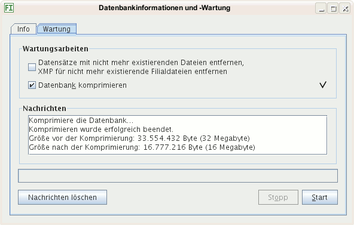
Sie können Bilder von der Kamera-Speicherkarte in einen Ordner kopieren lassen unter zwei Voraussetzungen:
Alle Bilder auf der Speicherkarte werden in einen Ordner kopiert mit dem Kopieren-Dialog.
Die kopierten Bilder werden nicht automatisch in die Datenbank aufgenommen. Wählen Sie dazu erst den Ordner (erneut) aus, in den die Dateien kopiert wurden.
Mit diesem Dialog können Sie Stichwörter importieren, die ein anderes Programm exportiert hat. Die importierten Stichwörter werden eingefügt in den Stichwortbaum, falls sie dort nicht existieren, und Sie können diese von dort aus später Ihren Bildern zuweisen.
Die Formatbeschreibung ist nur wichtig für Sie, falls Ihr Programm ein anderes Format erzeugt und Sie dieses konvertieren wollen in eines, das importiert werden kann.
.txt
Im Beispiel sei ein Tabulator 4 Zeichen "lang"
Geroldshausen
Landschaft
Baum
Himmel
Wolke
Wasser
Fluss
Donau
Main
Rhein
Maibaum
Nürtingen
Öffnet den Einstellungen-Dialog.
Mit der erweiterten Suche können Sie fast alles finden, was in der Datenbank gespeichert ist. Sie definieren, wie gesucht werden soll, und speichern Suchen, die sie zukünftig schnell benutzen.
Im zweiten Dropdown-Listenfeld von links wählen Sie aus, was Sie suchen: Aufnahmezeit, Bildbeschreibung, Fotograf, ... Im folgenden Dropdown-Listenfeld wählen Sie aus, worauf der folgende Suchtext passen soll:
Ei% passt auf alles, das mit Ei
anfängt: Ei, Eier, Einser, Eis, ...
%en passt auf Begriffe mit en am Ende:
Einsen, Wiesen, Burgen, ... und %eier%
auf alles, das irgendwo eier enthält: Eier,
Schlaumeier, Eierbecher, Zweierbeziehung, .... SQL:
LIKE.
ist gleich, nicht):
Alle Bilder, die nicht mit 50 mm Brennweite fotografiert wurden,
alle Bilder, die nicht von Heinz fotografiert wurden, ... SQL:
<>.
Groß- und Kleinschreibung sind egal: Sie können nach meyer suchen oder nach Meyer, gefunden werden die gleichen Bilder.
Der Dialog versucht, für die Eingabefelder nur passende Formate zuzulassen. Geben Sie beispielsweise Buchstaben ein für eine ISO-Zahl, werden diese nicht angenommen. Ist ein Punkt zu sehen, steht dieser für ein Komma und Sie geben Zahlen so ein, dass ganze Zahlen vor dem Punkt enden. Mit den Pfeiltasten können Sie den Eingabecursor positionieren. Beispiele sehen Sie in folgender Abbildung:
In der Abbildung oben ist das erste Eingabefeld ein Feld für Kommazahlen. Ganze Zahlen enden vor dem Punkt, wie die 35 im dritten Feld, im zweiten ist die Zahl 7,8 zu sehen (Der Punkt bedeutet ein Komma). Das vorletzte Feld dient der Eingabe eines Datums in der Form Jahr-Monat-Tag, so wie im letzten Eingabefeld zu sehen ist am Beispiel des 10. März 2008.
Das Datumsformat ist: YYYY-MM-DD: Das Jahr vierstellig,
danach ein Bindestrich, folgend der Monat zweistellig, wieder ein
Bindestrich und zuletzt der Tag zweistellig. Für den 24.12.2007
geben Sie ein 2007-12-24. Sie können auch den
Kalender benutzen (Schaltfläche rechts).
Suchbegriffe können Sie verknüpfen mit und sowie mit oder. Und bedeutet, der folgende Begriff muss auf jeden Fall in der Datenbank stehen, oder findet den folgenden Suchbegriff unabhängig vom vorhergehenden. Beispiele:
Kamera ist gleich Nikon D300 und
Aufnahmeort ist gleich München findet Bilder, die mit der
Nikon D300 in München fotografiert wurden
Kamera ist gleich Nikon D300 oder
Aufnahmeort ist gleich München findet alle Bilder, die
mit der Nikon D300 überall auf der Welt fotografiert wurden und
zusätzlich alle Bilder, die in München mit jeder beliebigen
Kamera fotografiert wurden
Datum größer gleich 2005-01-01 und Datum
kleiner gleich 2005-12-31 findet alle Bilder, die im Jahr
2005 fotografiert wurden
Datum größer 2005-12-31 oder Datum
kleiner 2005-01-01 findet alle Bilder vor 2005 und nach
2005, also alle, die nicht 2005 fotografiert wurden
Mit mehreren Suchbegriffen lassen sich versehentlich unlösbare
Aufgaben stellen: Stichwort ist gleich Baum UND Stichwort ist
gleich Himmel wird nie Bilder finden, da ein Stichwort
entweder "Baum" heißt oder "Himmel".
Mit Klammern lassen sich Probleme lösen wie: Finde alle Bilder, die
vom Fotografen Peter oder vom Fotografen
Heinz im Jahr 2006 fotografiert wurden.
Die Anfrage Fotograf ist gleich Peter oder Fotograf ist gleich
Heinz und Aufnahmezeit größer gleich 2006-01-01 und Aufnahmezeit
kleiner gleich 2006-12-31 findet zwar alle Bilder, die Peter
und Heinz 2006 fotografierten, aber auch alle Bilder, die 2006 von
irgendwem (anders) fotografiert wurden. Mit Klammern lässt sich die
Abfrage richtig formulieren: (Fotograf ist gleich Peter oder
Fotograf ist gleich Heinz) und Aufnahmezeit größer gleich 2006-01-01
und Aufnahmezeit kleiner gleich 2006-12-31.
Werden Klammern falsch gesetzt, erzeugt das einen Fehler und am unteren Fensterrand erscheint auf der Logdatei-Schaltfläche ein rotes Kreuz!
Speichern Sie wichtige Suchen! Alle gespeicherten Suchen sehen Sie links im Programmfenster durch Klick auf den Kartenreiter Suchen. Dort lassen sie sich ändern, löschen und neu erzeugen durch Klick mit der rechten Maustaste auf eine gespeicherte Suche. Klicken Sie mit der linken Maustaste auf den Namen einer gespeicherten Suche, erscheinen alle gefundenen Bilder.
Dieser Befehl kopiert die gemeinsamen Metadaten der ausgewählten Bilder in die Metadaten-Zwischenablage. Diese wird nicht überschrieben durch Einfügen anderen Inhalts in die System-Zwischenablage. Die kopierten Metadaten lassen sich einfügen in andere Bilder.
Dieser Befehl fügt kopierte XMP-Metadaten ein in die ausgewählten Bilder. Sich nicht wiederholende Werte werden ersetzt durch die aus der Zwischenablage, sich wiederholende werden existierenden hinzugefügt.
Mit diesem Menübefehl öffnen Sie einen Dialog, bei dem Sie einen Ordner auswählen können, in den alle IPTC-Daten der Bilder in XMP-Filialdateien geschrieben werden. Existiert eine XMP-Filialdatei, wird so verfahren:
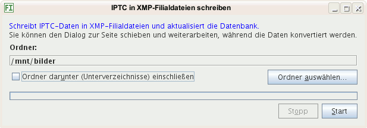
Mit diesem Menübefehl öffnen Sie einen Dialog, bei dem Sie einen oder mehrere Ordner auswählen können, in denen in Bilder eingebettete XMP-Daten in XMP-Filialdateien geschrieben werden für Bilder, die noch keine Filialdatei haben.
Mit diesem Befehl können Sie in allen ausgewählten Bildern einzelne XMP-Metdaten ersetzen, beispielsweise das falsche Jahr in einem Copyright oder Tippfehler. Zusätzlich wird die Datenbank mit den neuen Daten aktualisiert. Es werden nur genaue Entsprechungen ersetzt.
Lassen Sie das Ersetzen-Eingabefeld leer, wird der Begriff aus allen ausgewählten XMP-Filialdateien gelöscht.
Wollen Sie alle Vorkommen eines Begriffs ersetzen, suchen Sie diesen und es werden alle treffenden Bilder angezeigt. Klicken Sie in die Vorschaubildanzeige und tippen Strg + A zum Auswählen aller Bilder.
Dieser Menübefehl öffnet einen Dialog mit dessen Hilfe Sie Dateinamen in der Datenbank umbenennen können.
Sollten Sie die Bilder verschoben haben oder befinden diese sich nun auf einem Laufwerk mit anderem Buchstaben, können Sie so schnell die Dateinamen anpassen.
Hier geben Sie ein, was sich änderte:
C:
auf D:, geben Sie C: ein
/Alter Name/
unter Linux und \Alter Name\ unter Windows
Hier geben Sie ein, wie die Ersatz-Zeichenfolge lautet:
C:
auf D:, geben Sie D: ein
/Neuer Name/
unter Linux und \Neuer Name\ unter Windows
Hier schränken Sie ein, in welchen Dateinamen ersetzt wird:
img nach Bilder.
tiff nach
tif (mit einem "f").
/Daten/Bilder/Egon/Bilder nach
/Daten/Images/Egon/Images.
Tipp: Sichern Sie die Datenbankdateien vorher; kopieren Sie diese beispielsweise in einen weiteren Ordner, während das Programm Bilder nicht gestartet ist. So können Sie bei unerwünschten Ergebnissen die Kopien in den Datenbankordner zurückkopieren (während das Programm Bilder nicht gestartet ist) und das Umbenennen mit anderen Eingaben wiederholen.
Solange die Dateien umbenannt werden, können Sie nicht
weiter arbeiten mit dem Programm Bilder. Das
Umbenennen sollte schnell erledigt sein. Auf meinem 5 Jahre alten
Rechner dauerte das Umbenennen von mehr als 15.000 Bildern etwa
1 Sekunde mit den Eingaben, die unten abgebildet sind
(/home/elmar/bilder/ wurde ersetzt durch
/mnt/bilder/).
Über Aktionen fügen Sie mit dem Dialog Programmeigenschaften Aktionen hinzu, beispielsweise zum Rotieren von Bildern oder Anzeigen einer Diaschau.
Mit der Funktionstaste F4 erscheint der Aktionen-Dialog oder über das Menü Werkzeuge. Mit einem Doppelklick auf diese wird die Aktion für alle ausgewählten Dateien ausgeführt. Alternativ können Sie auf die Schaltfläche Ausführen klicken oder die Tastenkombination Alt+A drücken.
Der Dialog kann offen bleiben, während Sie mit dem Programm Bilder weiterarbeiten.
Siehe auch: Bilder öffnen im Einstellungen-Dialog und Tipp: Mehr Funktionen hinzufügen.
Dieser Dialog zeigt Ihnen an, welche Begriffe Sie zuletzt eingaben in die Felder des Kartenreiters Bearbeiten.
Sie können den Dialog anzeigen mit der Funktionstaste F4. Er ist so lange zu sehen, bis Sie ihn wieder schließen.
Mit den Tasten ALT + TAB (Tabulator) wechseln Sie während
des Bearbeitens zu diesen Dialog. Drücken Sie Alt + A
oder Alt + B usw. - den Buchstaben in den eckigen
Klammern - wird der Begriff eingefügt. Der zuletzt eingegebene
Begriff ist immer dem Buchstaben A zugeordnet, der
vorletzte B usw. Mit ALT + TAB gelangen Sie
zurück zum Bearbeiten-Kartenreiter.

Eingabhilfen fügen Wörter hinzu in Eingabefelder des Kartenreiters Bearbeiten.
Die Arbeit mit dem Stichwortbaum ist hier beschrieben.
Sie können ein Stichwort auswählen und auf eine beliebige Liste des Bearbeiten-Kartenreiters ziehen oder auf ein beliebiges Eingabefeld. Es werden das Stichwort und seine echten Elternstichwörter übernommen, in Eingabefelder nur das erste, in Listen alle ausgewählten, sofern diese dort nicht existieren.
Alternativ können Sie ein Stichwort auf ausgewählte Bilder fallen lassen. In diesem Fall wird die Stichwortliste aller ausgewählten Bilder ergänzt mit dem fallen gelassenen Stichwort und seinen echten Elternstichwörtern.
Sie können eines oder mehrer Stichwörter auswählen und auf eine beliebige Liste des Bearbeiten-Kartenreiters ziehen oder auf ein beliebiges Eingabefeld. Sind mehrere Stichwörter ausgewählt, wird in Eingabefelder nur das erste übernommen, in Listen alle ausgewählten.
Alternativ können Sie die Stichwörter auf ausgewählte Bilder fallen lassen. In diesem Fall wird die Stichwortliste aller ausgewählten Bilder ergänzt mit den fallen gelassenen Stichwörtern.
Sie können eines oder mehrer Kategorien auswählen und auf eine beliebige Liste des Bearbeiten-Kartenreiters ziehen oder auf ein beliebiges Eingabefeld. Sind mehrere Kategorien ausgewählt, wird in Eingabefelder nur die erste übernommen, in Listen alle ausgewählten.
Alternativ können Sie die Kategorien auf ausgewählte Bilder fallen lassen. In diesem Fall wird die Liste der weiteren Kategorien aller ausgewählten Bilder ergänzt mit den fallen gelassenen Kategorien.
| Tasten | Was geschieht? |
|---|---|
| Alt+1 | IPTC-Metadaten auswählen |
| Alt+2 | EXIF-Metadaten auswählen |
| Alt+3 | XMP-Metadaten auswählen |
| Alt+4 | Hierarchische Stichwörter auswählen |
| Strg+0 | Ins Vorschaubildfenster wechseln |
| Strg+1 | Kartenreiter Ordner auswählen |
| Strg+2 | Kartenreiter Gespeicherte Suchen auswählen |
| Strg+3 | Kartenreiter Bildsammlungen auswählen |
| Strg+4 | Kartenreiter Kategorien auswählen |
| Strg+5 | Kartenreiter Favoriten-Ordner auswählen |
| Strg+6 | Kartenreiter Stichwörter auswählen |
| Strg+7 | Kartenreiter Zeitleiste auswählen |
| Strg+8 | Kartenreiter Verschiedenes auswählen |
| Alt+C | Bilder von der Kamera-Speicherkarte kopieren in den aktuellen Ordner |
| Strg+Alt+C | XMP Metadaten der ausgewählten Bilder kopieren in die Metadaten-Zwischenablage |
| Strg+D | Datenbank warten |
| Strg+Alt+I | IPTC-Metadaten konvertieren nach XMP |
| Strg+O | Stichwörter ein- und ausblenden in die Vorschaubilder |
| Strg+Q | Programm beenden |
| Strg+S | Ordner nach neuen/veränderten/gelöschten Bildern durchsuchen |
| Strg+Alt+S | Einstellungen ändern |
| Strg+Alt+V | Kopierte XMP Metadaten einfügen in die ausgewählten Bilder |
| Strg+Alt+X | Metadaten ausgewählter Bilder umbenennen/löschen |
| Strg+Plus | Vorschaubilder vergrößern, falls kleiner als 100 % angezeigt |
| Strg+Minus | Vorschaubilder verkleinern |
| Strg+F | Bilder finden (suchen) |
| Strg+E | Metadaten der ausgewählten Bilder bearbeiten |
| F1 | Hilfe anzeigen für den aktuellen Kontext |
| F3 | Erweiterte Bildsuche |
| F4 | Aktionen anzeigen |
| F7 | Zuletzt eingegebene Metadaten anzeigen |
| F9 | Eingabe-Unterstützungsdialog anzeigen |
| Tasten | Was geschieht? |
|---|---|
| 0 | Bewertungen entfernen von den ausgewählten Bildern |
| 1 | Ausgewählte Bilder bewerten mit einem Stern |
| 2 | Ausgewählte Bilder bewerten mit zwei Sternen |
| 3 | Ausgewählte Bilder bewerten mit drei Sternen |
| 4 | Ausgewählte Bilder bewerten mit vier Sternen |
| 5 | Ausgewählte Bilder bewerten mit fünf Sternen |
| P | Ausgewählte Bilder annehmen |
| R | Ausgewählte Bilder ablehnen |
| Entf | Ausgewählte Bilder löschen aus dem Ordner oder entfernen aus einer Bildsammlung |
| F2 | Ausgewählte Bilder umbenennen |
| F5 | Ansicht aktualisieren |
| Tasten | Was geschieht? |
|---|---|
| Strg+N | Neuen Ordner anlegen unterhalb des ausgewählten Ordners |
| Entf | Ausgewählten Ordner löschen |
| F2 | Ausgewählten Ordner umbenennen |
| F5 | Ansicht aktualisieren |
| Tasten | Was geschieht? |
|---|---|
| Strg+E | Ausgewählten Favoritenordner bearbeiten (umbenennen, anderen Ordner zuweisen) |
| Strg+I | Neuen Favoritenordner einfügen |
| Strg+N | Neuen Ordner anlegen im Dateisystem unterhalb des ausgewählten Ordners |
| Strg+O | Ausgewählten Ordner öffnen im Kartenreiter Ordner |
| Entf | Ausgewählten Ordner löschen |
| F2 | Ausgewählten Ordner umbenennen |
| F5 | Ansicht aktualisieren |
| Tasten | Was geschieht? |
|---|---|
| Strg+B | Ausgewähltes Stichwort und seine Eltern hinzufügen zu den ausgewählten Bildern |
| Strg+N | Neues Stichwort hinzufügen unterhalb des ausgewählten Stichworts |
| Strg+R | Ausgewähltes Stichwort umschalten zwischen Hilfs-/Echtes Stichwort |
| Rückschritt-Taste | Ausgewähltes Stichwort entfernen aus den ausgewählten Bildern |
| Entf | Ausgewähltes Stichwort löschen inklusive seiner Kinder |
| F2 | Ausgewähltes Stichwort umbenennen |
| Tasten | Was geschieht? |
|---|---|
| Entf | Ausgewählte Bildsammlung löschen |
| F2 | Ausgewählte Bildsammlung umbenennen |
| Tasten | Was geschieht? |
|---|---|
| Strg+E | Ausgewählte Suche bearbeiten |
| Strg+N | Neue Suche einfügen |
| Entf | Ausgewählte Suche löschen |
| F2 | Ausgewählte Suche umbenennen |
Wählen Sie ein Programm aus durch Klick auf die Schaltfläche
Programm auswählen, das bei Doppelklick auf ein
Vorschaubild die Original-Bilddatei öffnen soll. Das kann ein
Bildbetrachter sein oder eine Bildbearbeitung.
Hier können Sie mehrere Programme hinzufügen, die zum Öffnen von Bildern angeboten werden vom Kontextmenü im Fenster mit den Vorschaubildern.

Sie können das gleiche Programm mehrmals eintragen mit verschiedenen Aufrufparametern. Zum Hinzufügen wird Ihnen der Dialog Programmeigenschaften angeboten.
Siehe auch: Dialog Aktionen und Tipp: Mehr Funktionen hinzufügen.
Die Schnellsuche ist das Eingabefeld am unteren
Fensterrand des Programms. Sie funktioniert (erst), nachdem
Sie hier ausgewählt haben, wonach Sie suchen
wollen. Die Schnellsuche findet alle Bilder, die einen
Teil des Suchbegriffs enthalten in irgendeinem
Feld der angekreuzten
Metadaten
(SQL-ODER-Suche mit LIKE
%Suchbegriff%). Groß- und Kleinschreibung sind egal. Geben
Sie katze ein, werden Katze und
Hauskatze gefunden.
Sollten Sie viele Felder ankreuzen, ist mehr zu durchsuchen und die Suche dauert länger. Gefunden werden (nur) Bilder, die in die Datenbank eingelesen wurden.
Die Vorschaubilder werden so groß berechnet wie Sie hier angeben. Ändern Sie die Größe (später), sollten Sie die Vorschaubilder neu berechnen lassen. Klicken Sie dazu auf die Schaltfläche Alle neu berechnen. Während der Aktualisierung können Sie den Einstellungen-Dialog schließen und weiterarbeiten. Der Fortschritt wird in einem anderen Dialog angezeigt, den Sie nicht schließen sollten, außer Sie wollen keine weiteren Vorschaubilder berechnen lassen.
Kreuzen Sie hier an, werden die Vorschaubilder geladen, die in den Bildern eingebettet sind. Das geht schneller, als die Vorschaubilder zu berechnen, aber manchmal sind die eingebetteten Vorschaubilder von geringer Qualität.
Die Vorschaubilder werden berechnet mit Imagero
(http://reader.imagero.com/). Sie können diese mit
einem beliebigen anderen Programm erzeugen lassen, sofern dies
JPEGs an die Standardausgabe
liefern kann. Ein anderes Programm ist sinnvoll, falls:
In dieser Hilfe gibt es ein Beispiel.
Stellen Sie hier ein, mit welchem Zeichensatz die
IPTC-Daten kodiert sind. Leider
schreiben dies nicht alle Programme (fehlerfrei) in die IPTC-Daten.
Ist der Zeichensatz falsch, werden beispielsweise Umlaute verkehrt
angezeigt und Sie können nicht danach suchen, außer, Sie geben die
gleichen Hieroglyphen
ein, die falsch angezeigt werden.
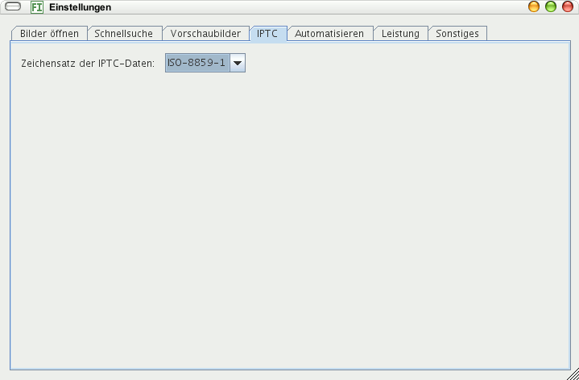
Sie können Ordner auswählen, die automatisch nach neuen und in der Datenbank nicht existierenden Metadaten durchsucht werden und mit denen die Datenbank aktualisiert wird.
Setzen sie hier ein Häkchen, wird nach dem Start für jedes Bild in der Datenbank geprüft, ob es noch im Dateisystem existiert. Ist das nicht der Fall, wird es aus der Datenbank gelöscht. So erscheint es nicht ungewollt bei Suchen, in den Stichwörtern, Kategorien und Bildsammlungen.
Diese Option sollten Sie deaktivieren, falls:
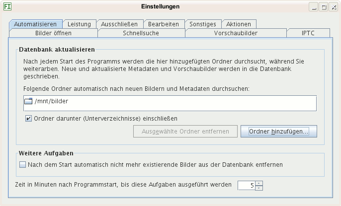
Hier geben Sie ein, nach wievielen Sekunden ein externes Programm beendet wird. Das ist von Belang, falls Sie die Vorschaubilder von einem externen Programm erzeugen lassen und eigene Skripte einsetzen zum Verarbeiten von Bildern. Sollte ein Programm nach dieser Zeit nicht fertig sein, wird es beendet.
Aktivieren Sie diese Option, falls zum Aktualisieren der Metadaten in der Datenbank in Bilddateien ohne XMP-Filialdatei nach eingebetteten XMP-Metadaten gesucht werden soll. Haben viele Bilder keine Filialdatei und keine eingebetteten XMP-Informationen, dauert das Aktualisieren der Datebank sehr lange, da alle Bilder komplett durchsucht werden. Wurden keine eingebettete XMP-Metadaten gefunden, wird darin nach IPTC-Daten gesucht, falls diese Option aktiviert ist. Hat ein Bild XMP-Informationen und stehen diese am Dateianfang, ist das Einlesen schnell, da nur so lange eingelesen wird, bis das Ende der XMP-Daten erreicht ist.
Aktivieren Sie diese Aktion nur, falls:
Aktivieren Sie diese Option nicht, falls Sie viele Bilder ohne Filialdateien haben und wenige mit eingebetteten XMP-Metadaten, da das Einlesen der Verzeichnisse unnötig verzögert wird.
Angezeigt werden unabhängig von dieser Option eingebettete IPTC-Metadaten immer und eingebettete XMP-Metadaten, falls keine Filialdatei existiert.
Ist diese Aktion deaktiviert, können Sie trotzdem eingebettete IPTC- und XMP-Metadaten in die Datenbank schreiben lassen:
Sie können auch Filialdateien erzeugen lassen aus eingebetteten XMP-Metadaten sowie aus eingebetteten IPTC-Metadaten.
Schließlich ist es möglich, diese Option ein- und auszuschalten vor dem Einlesen einzelner Ordner, falls in einigen Ordnern ohne Filialdateien viele Bilder mit eingebetteten XMP-Metadaten sind, in anderen nicht.
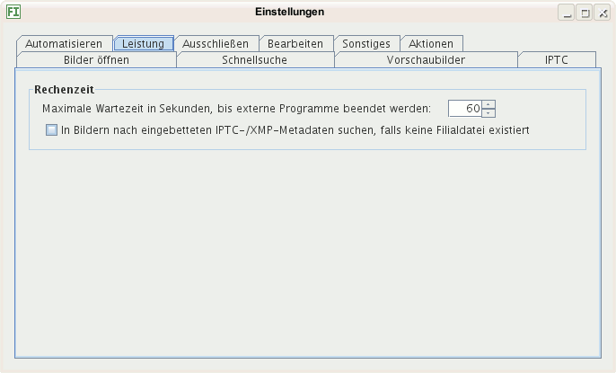
Hier können Sie reguläre Ausdrücke eingeben für Bilder, die nicht angezeigt werden sollen.
Informieren Sie sich über reguläre Ausdrücke im Web, falls Sie diese
nicht kennen. Für die meisten Fälle reicht die Zeichenfolge
Punkt + Stern (.*), die bedeutet: Hier
kann nichts stehen oder beliebig viel. Wollen Sie alle Bilder im
Ordner Testfotos ausschließen, erreichen Sie das durch
den regulären Ausdruck:
.*Testfotos.*
Wählen Sie einen ausgeschlossenen Ordner an, werden dessen Bilder
nicht mehr angezeigt. Hängen Sie allen Vorschaubildern auf dem
Datenträger vor der Endung -vorschau an, können Sie
diese ausblenden mit dem regulären Ausdruck:
.*-vorschau.*
oder genauer eine mit mehreren 3 Zeichen-Dateiendungen:
.*-vorschau\....$
Sie sollten auf die Schaltfläche Datenbank aktualisieren klicken, nachdem Sie reguläre Ausdrücke hinzufügten, damit Bilder aus der Datenbank gelöscht werden, die auf die regulären Ausdrücke passen, sonst erscheinen diese bei Suchen, Stichwörtern, Kategorien und Bildsammlungen.
Ordnernamen unter Windows werden durch Backslashes ("\") getrennt.
Falls Sie einen Backslash eingeben wollen zum Trennen zweier
Ordnernamen, schreiben Sie statt dessen zwei Backslashes: Statt
.*\Ordner\Unterordner\.* geben Sie ein:
.*\\Ordner\\Unterordner\\.*. Andernfalls wird Ihr
regulärer Ausdruck falsch interpretiert.
Hier wählen Sie alle Metadaten aus, die Sie bearbeiten und abspeichern lassen möchten. Beim nächsten Programmstart werden Ihnen nur noch diese angeboten.
Sind Sie beispielsweise nicht daran interessiert, Ihren Bildern eine Auftragskennung zuzuweisen, entfernen Sie das Häkchen davor. Zukünftig können Sie schneller eingeben, da dieses Feld nicht mehr angesprungen wird. Zusätzlich können Sie schneller zugreifen auf die beiden Kartenreiter Bearbeiten und Vorlagen am Ende der Metadaten-Eingabefelder.
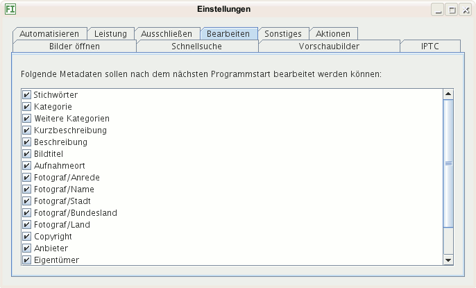
Hier wählen Sie einen Webbrowser aus, der aufgerufen wird, falls Sie mit dem Internet verbunden werden müssen, beispielsweise zum Anzeigen von Satellitenbildern des Aufnahmeorts bei GPS-Daten im Bild.

Sie können die Datenbank in einem anderen Ordner anlegen lassen. Wollen Sie Ihre bisherigen Daten übernehmen, kopieren Sie aus dem aktuellen Datenbankordner, der im Dialog angezeigt wird, folgende Dateien nach Beenden von Bilder und vor einem Neustart:
thumbnails, dieser enthält die
Vorschaubilder
database starten, z.B.
database.data
So können z.B. mehrere - nicht gleichzeitig! - die selbe Datenbank benutzen und bearbeiten oder Sie wählen einen Ordner aus, der täglich automatisch gesichert wird, sodass das Backup der Datenbank gewährleistet ist.
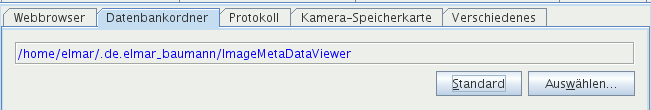
Der Programmablauf wird protokolliert und das Protokoll in eine Logdatei geschrieben. Diese kann angezeigt werden durch Klick auf eine Schaltfläche am unteren Fensterrand. Sie hat ein grünes Häkchen, falls alles ok ist und ein rotes Kreuz, falls Fehler auftraten. Bedeutungen der Auswahl:
Wählen Sie WARNUNG oder INFO, solange keine Probleme bestehen und zur Fehlerbehebung AM FEINSTEN. Meldungen anderer Kategorien als WARNUNG oder SCHWERWIEGEND werden in die Standardausgabe des Betriebssystems geschrieben, andernfalls würde die Protokolldatei viele Megabyte groß. Die Standardausgabe sehen Sie im Fenster Systemausgabe, zu erreichen über die Schaltfläche Ausgabe am unteren Fensterrand.
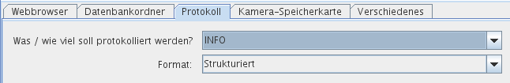
Hier können Sie einen Ordner auswählen, von dem alle Bilder auf einer Speicherkarte in einen Ordner kopiert werden.
Wählen Sie den Ordner aus, in dem der Inhalt Ihrer
Kamera-Speicherkarte angezeigt wird, wenn Sie Ihre Kamera mit dem
Rechner verbinden oder die Karte in einen Kartenleser einführen:
Unter Windows einen Laufwerksbuchstaben, unter Linux einen Ordner,
beispielsweise /mnt/compactflash. Das Laufwerk oder der
Ordner werden nach Bildern durchsucht einschließlich aller
untergeordneten Ordner.
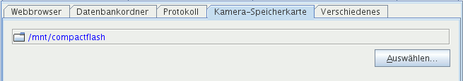
Wollen Sie Bilder archivieren, die in versteckten Ordnern gespeichert sind, kreuzen Sie dieses Kästchen an.
Ist diese Option angekreuzt, wird versucht, nach dem Start den Ordner auszuwählen, der beim Beenden von Bilder im Kartenreiter Ordner ausgewählt war. Hat ein Laufwerk viele Ordner, kann dies den Start verzögern. Unter dem Betriebssystem Windows kommt es aus unterschiedlichen Gründen zur Verzögerung, beispielsweise wenn ein Laufwerksbuchstabe mit einem Netzlaufwerk verknüpft war und dieses nicht erreicht werden kann.
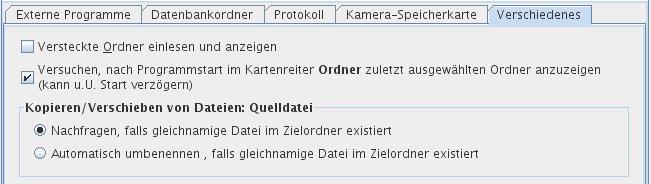
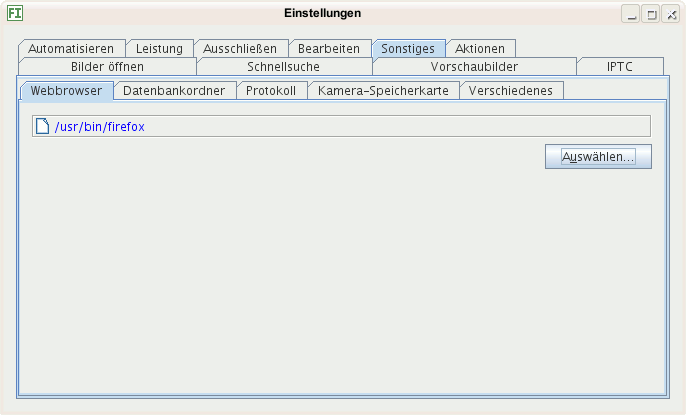
Hier können Sie eine oder mehrere Aktionen bestimmen, die ausgeführt werden, nachdem ein Bild in die Datenbank geschrieben wurde. Mehr über Aktionen steht auf der Hilfeseite Aktionen.
Die Aktionen werden in der Reihenfolge ausgeführt, in der sie in diesem Dialog erscheinen.
Ändert eine Aktion das Datum / die Uhrzeit eines Bilds oder einer Filialdatei, sollte es anschließend Datum und Uhrzeit der letzten Änderung wieder auf den gleichen Wert zurücksetzen wie vor der Bearbeitung, da die Datenbank und die Bilder sonst endlos aktualsisiert würden!
Diese Option wurde hauptsächlich entwickelt, damit Metadaten unabhängig vom Programm Bilder eingebettet werden können in die Bilddateien: Bilder schreibt nur XMP-Filialdateien, damit das Original nicht verändert oder beschädigt wird. Hier ein Beispiel-Skript zum Einbetten von XMP-Metdadaten.
Die Aktion wird immer ausgeführt, nachdem ein Bild in die Datenbank eingefügt oder in ihr modifiziert wurde.
Die Aktion wird ausgeführt, nachdem ein Bild in die Datenbank eingefügt oder in ihr modifiziert wurde, falls es XMP Metadaten enthält (in einer Filialdatei oder eingebettet, falls eingebettete Metadaten übernommen werden sollen).
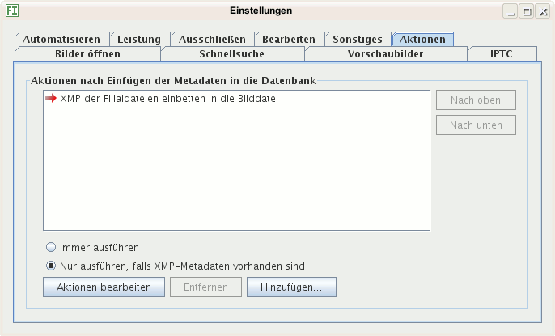
Im Dialog Programmeigenschaften stellen Sie die Eigenschaften der Programme ein, die Sie einfügten ins Kontextmenü des Vorschaubildfensters über den Einstellungen-Dialog oder im Aktionen-Dialog hinzufügten.
-rotate 90
-sharpen, wird das Programm so aufgerufen: Programm
-rotate 90 -sharpen Bild.jpg.
-rotate 90 -sharpen, wird das Programm so
aufgerufen: Programm Bild.jpg -rotate 90 -sharpen.
Tragen Sie in beide Felder Parameter ein, wird das Programm mit den
Parametern davor und danach aufgerufen, z.B. Programm
-parameter_vor Bild_1.jpg Bild_2.jpg -parameter_nach.
Programm Bild_1, Bild_2, Bild_3
Programm Bild_1; Programm
Bild_2; Programm Bild_3.
Dieser Befehl gibt den ausgewählten Bildern einen neuen Namen auf dem Datenträger. Sie können jede ausgewählte Datei einzeln umbenennen oder alle auf einmal mit einer Schablone.
Hier geben Sie für jede Datei einen neuen Namen ein, der Dialog zeigt nach jeder Umbenennung die nächste ausgewählte Datei an.
Mit der Schablone können Sie alle ausgewählten Dateien auf einmal einheitlich umbenennen lassen anhand einer Schablone. Sie können bis zu drei Bestandteile des Namens bestimmen:
001
vergeben, für das zweite 002, für das dritte
003 usw. Erhöhen Sie die Schrittweite auf 2, hat
das erste Bild die Ziffernfolge 001, das zweite
003 und das dritte 005.
Unten im Beispiel sehen Sie, wie die erste der ausgewählten Bilddateien nach dem Umbenennen heißt.
Nutzen Sie diese Hilfe. Sie rufen die Hilfe auf mit der Taste F1 im Programfenster und in den Dialogen.
Fehler werden angzeigt durch ein rotes Kreuz auf der Schaltfläche am unteren Fensterrand:

Klicken Sie auf die Schaltfläche, wird die Logdatei geöffnet. In ihr steht mehr über den Fehler. Ist alles in Ordnung oder nachdem Sie die Logdatei angeschaut haben, hat die Schaltfläche ein grünes Häkchen:

Nutzen Sie Tastenkombinationen! So arbeiten Sie schneller. Kombination bedeutet, Sie drücken gleichzeitig zwei oder drei Tasten und ein Befehl wird ausgeführt.
Tastenkombinationen werden unterschiedlich bezeichnet:
Sie wollen Stichwörter für ein Bild einfügen: Mit Strg+E springen Sie direkt zur Eingabe. Suchen Sie ein Bild, springen Sie mit Strg+F direkt ins Suchen-Feld. Zurück zu den Vorschaubildern gelangen Sie mit Strg+0 (Null).
Überprüfen Sie gelegentlich Ihre Einstellungen über das Menü Bearbeiten > Einstellungen, Tastenkombination Strg + ALT + S.
Speichern Sie wichtige Suchen! So finden Sie schnell Bilder mit bestimmten Eigenschaften.
Eine gespeicherte Suche ist eine Vorlage für eine ähnliche neue.
Sie können im Einstellungen-Dialog ein Programm zum Erzeugen von Vorschaubildern definieren. Hier ist ein Skript, mit dem ich unter Linux Vorschaubilder erzeugen lasse:
#!/bin/sh
#
# Author : Elmar Baumann <eb@elmar-baumann.de>
# Date : 2008/08/02
# Doc : Von einem Bild ein JPEG-Thumbnail ausgeben auf die Standardausgabe
# 1. Parameter: Bilddateiname
# 2. Parameter: Länge der längeren Thumbnailseite in Pixel
#
# Benötigte Programme: - ImageMagick, davon identify und convert
# - dcraw
#
################################################################################
# Leerzeichen in Dateinamen erlauben
IFS="
"
# Name der Bilddatei, für die das Thumbnail erzeugt werden soll (1. Parameter)
image_filename=$1
# Länge der längeren Thumbnailseite in Pixel (2. Parameter)
length=$2
# Speicherort für die Ausgabe von dcraw
temp_dir=$HOME/tmp
# Dateiname des von dcraw ausgegebenen temporären Bilds
temp_filename=$temp_dir/$(basename $0).$$.ppm
# So viele Pixel muss die längere Thumbnailseite mindestens haben
MIN_LENGTH=50
# Endungen aller Dateinamen, die keine RAW-Datei benennen
not_raw_filename_suffixes="gif
jpeg
jpg
png
tif
tiff"
################################################################################
function check_params() {
if [ -z $image_filename ] || [ -z $length ]
then
echo "Falsche Parameteranzahl (1. Bilddatei, 2. Länge)!" >&2
exit 1
fi
if [ $length -lt $MIN_LENGTH ]
then
echo "Thumbnaillänge muss mindestens $MIN_LENGTH sein!" >&2
exit 2
fi
}
function check_files() {
if ! [ -f $image_filename ]
then
echo "Bilddatei '$image_filename' existiert nicht!" >&2
exit 3
fi
if ! [ -d $temp_dir ]
then
echo "Temporärverzeichnis '$temp_dir' existiert nicht!" >&2
exit 4
fi
touch $temp_filename
if [ $? -ne 0 ]
then
echo "$temp_dir lässt sich nicht beschreiben!" >&2
exit 5
fi
rm $temp_filename
}
function is_raw_file() {
local filename_suffix=$(echo $image_filename | sed 's%.*\.\(.*\)%\1%')
echo $not_raw_filename_suffixes | grep -qivw $filename_suffix
echo $?
}
function is_landscape() {
local filename=$1
width=$(identify -format '%w' $filename)
height=$(identify -format '%h' $filename)
test $width -gt $height
echo $?
}
function image_to_stdout() {
local filename=$1
local length_cmd="x${length}"
if [ $(is_landscape $filename) -eq 0 ]
then
length_cmd="${length}x"
fi
convert $filename -resize $length_cmd -unsharp 0.5x0.5+1.0+0.1 jpg:-
}
# dcraw-Parameter:
# -c Ausgabe auf stdout
# -h half-size color image (schneller)
function raw_to_stdout() {
dcraw -c -h $image_filename > $temp_filename
image_to_stdout $temp_filename
rm $temp_filename
}
function thumbnail_to_stdout() {
if [ $(is_raw_file) -eq 0 ]
then
raw_to_stdout
else
image_to_stdout $image_filename
fi
}
function tear_down {
if [ -f $temp_filename ]
then
rm $temp_filename
fi
}
check_params
check_files
thumbnail_to_stdout
tear_down
Sie können über ein Skript XMP-Metdaten in eine Bilddatei einbetten lassen. Am bequemsten ist es, Sie stellen das ein. Hier als Beispiel ein Bash-Skript für Linux, das die Daten der XMP-Filialdateien einbettet in die Bilddateien:
#!/bin/sh
#
# Datum: 2009/06/07
# Autor: Elmar Baumann <eb@elmar-baumann.de>
#
# Aufruf: embedxmp.sh <Bilddatei>
#
# Bettet in Bilddateien XMP-Metadaten ein, die in XMP-Filialdateien stehen. Eine
# XMP-Filialdatei ist im gleichen Verzeichnis wie die Bilddatei und hat den
# gleichen Basisnamen, die Endung heißt ".xmp". Heißt ein Bild "Rose.jpg", so
# heißt seine Filialdatei "Rose.jpg".
#
# Voraussetzungen: Bash, basename, exiftool-Executable
# (http://www.sno.phy.queensu.ca/~phil/exiftool/). Es ist die
# Konstante EXIFTOOL anzupassen: Der Pfad zur ausführbaren
# Datei "exiftool".
#
################################################################################
IFS="
"
THIS=$(basename $0)
EXIFTOOL=/usr/bin/exiftool
EXIF_TOOL_BACKUP_SUFFIX='_original'
TIMESTAMP_FILE=${HOME}/tmp/${THIS}.$$
EXIT_VALUE=0
if ! [ -x $EXIFTOOL ]
then
echo "${THIS}: Das Program ${EXIFTOOL} existiert nicht (in diesem Verzeichnis) oder ist nicht ausführbar!" 1>&2
exit 1
fi
if [ -z $1 ]
then
echo "${THIS}: Bilddateiname fehlt (Parameter 1)!" 1>&2
exit 1
fi
IMAGE_FILE=$1
if ! [ -f $IMAGE_FILE ]
then
echo "${THIS}: Bilddatei '${IMAGE_FILE}' existiert nicht!" 1>&2
exit 1
fi
touch $TIMESTAMP_FILE
if [ $? -ne 0 ]
then
echo "${THIS}: Temporäre Datei '${TIMESTAMP_FILE}' kann nicht erzeugt werden!" 1>&2
exit 1
fi
SIDECAR_FILE=${IMAGE_FILE%*.*}.xmp
if ! [ -f $SIDECAR_FILE ]
then
echo "${THIS}: XMP-Filialdatei '${SIDECAR_FILE}' existiert nicht!" 1>&2
exit 1
fi
touch --reference=${IMAGE_FILE} ${TIMESTAMP_FILE}
$EXIFTOOL \
-tagsFromFile \
${SIDECAR_FILE} \
${IMAGE_FILE}
if [ $? -eq 0 ]
then
# Zeile im Anschluss an diesen Kommentar kommentieren, falls nicht das
# Risiko eingegangen werden soll, dass ExifTool ein beschädigtes Bild
# erzeugt und dann kein Backup mehr existiert
rm ${IMAGE_FILE}${EXIF_TOOL_BACKUP_SUFFIX}
touch --reference=${TIMESTAMP_FILE} ${IMAGE_FILE}
else
echo "Fehler beim Ausführen von ${EXIFTOOL} -tagsFromFile -preserve ${SIDECAR_FILE} ${IMAGE_FILE}!"
EXIT_VALUE=1
fi
rm ${TIMESTAMP_FILE}
exit ${EXIT_VALUE}
Sie können dem Programm Bilder mehr Funktionen hinzufügen durch Nutzen anderer Programme oder selbst geschriebener Skripte (Batch-Dateien) im Aktionen-Dialog oder im Kontextmenü des Vorschaubildfensters (Einstellungen-Dialog). Beispiele:
Folgende Programme eignen sich gut dafür:
http://www.sno.phy.queensu.ca/~phil/exiftool/
(Bearbeiten von EXIF, IPTC und XMP)
http://imagemagick.org/
http://www.irfanview.com/
http://pagesperso-orange.fr/pierre.g/xnview/de_xnview.html
Beispiel-Sktripte sind im Verzeichnis scripts im
Installationsordner des Programms Bilder. Diese
Skripte können bei einer Installation überschrieben werden.
Speichern Sie Skripte, die Sie benutzen, in einem anderen
Verzeichnis!
Sollte der Arbeitsspeicher nicht ausreichen für Bilder, können Sie mehr zur Verfügung stellen. Ergänzen Sie die Startdatei bei Heap Overflows:
java -Xms30m -Xmx500m -jar Bilder.jar
So stellen Sie Anfangs 30 Megabyte zur Verfügung und Bilder kann - falls erforderlich - bis zu 500 Megabyte benutzen.
Gibt es einen Thread Stack Overflow, kann der Stack vergrößert werden mit dem Parameter -Xss gefolgt von einer Megabyte-Angabe.
Folgende Metadaten werden gelesen und rechts im Programmfenster angzeigt:
Wird ein (einziges) Bild ausgewählt, werden dessen IPTC-, EXIF- und XMP-Metadaten angezeigt, gelesen aus der Bilddatei oder XMP-Filialdateien. Sie sehen stets die aktuellen Daten.
Die Metadaten in der Datenbank werden (nur) für die Suche benutzt.
In der Datenbank gespeichert sind eine Auswahl an Metadaten und einige weitere Daten:
Die Vorschaubilder sind gespeichert im Ordner
thumbnails unterhalb des Ordners mit den
Datenbank-Dateien.
Alles andere, beispielsweise das Standardprogramm zum Öffnen von
Bildern oder die Spalten für die Schnellsuche, ist in der
Einstellungen-Datei gespeichert (Settings.properties)
im Benutzerordner.
Automatisch werden nur Dateien eingelesen und in die Datenbank geschrieben, die:
Die Datenbank ist im Betriebssystem-Benutzerordner gespeichert, dort
im untergeordneten Ordner
.de.elmar_baumann/ImageMetaDataViewer (Punkt am
Anfang). Die Datenbankdateien starten mit database.
In diesem Ordner sind auch die Programmeinstellungen gespeichert sowie die Logdatei.
Sie sollten diesen Ordner regelmäßig sichern! Während der Sicherung sollte das Programm 'Bilder' nicht gestartet sein!
Unter Windows ist der Benutzerordner häufig
C:\Dokumente und Einstellungen\Benutzername, z.B.
C:\Dokumente und Einstellungen\elmar.
Unter Linux ist der Benutzerordner in der Regel
/home/benutzername, z.B. /home/elmar.
Sie können den Datenbankordner ändern mit dem Einstellungen-Dialog, Kartenreiter Sonstiges.
Metadaten lassen sich direkt in die Bilddateien schreiben mit dem Vorteil, dass Metadaten und Bilder immer zusammen bleiben. Aus folgenden Gründen arbeitet das Programm Bilder mit XMP-Filialdateien:
Der Nachteil ist, Sie müssen die XMP-Dateien mit den Bildern kopieren (sichern) oder verschieben, sollen die Metadaten erhalten bleiben. Zurzeit liest nur Adobe Photoshop Lightroom die Metadaten aus den XMP-Dateien. Dies könnte sich zukünftig ändern.
Falls Sie die Metadaten zusätzlich in Ihren Bildern haben wollen, erreichen Sie das mit einem Skript.
EXIF ist die Abkürzung für Exchangeable Image File Format: Digitalkameras schreiben in Bilddateien zusätzlich zu den Pixeln (Bildpunkten) zahlreiche Daten wie Vorschaubilder (Thumbnails), Blende, Verschlusszeit, Objektivbrennweite und Datum.
URL für eine PDF-Datei des Standards:
http://www.exif.org/Exif2-2.PDF
IPTC ist das Akronym für International Press Telecommunications Council. Diese legte gemeinsam mit der Newspaper Association of America einen Standard fest, in dem steht, wie und welche Metadaten in Bilddateien gespeichert werden.
URL für eine PDF-Datei des Standards:
http://www.iptc.org/IIM/4.1/specification/IIMV4.1.pdf.
Metadaten sind (weitere) Daten zum Bild ("Daten über die Bilddaten"):
Das Programm Bilder kennt folgende Metadatenformate:
XMP ist die Abkürzung von Extensible Metadata Platform und ein Standard zum Speichern von Metadaten. Diese werden im XML-Format in die Bilddatei geschrieben oder in Filialdateien.
URL für eine PDF-Datei des Standards:
http://partners.adobe.com/public/developer/en/xmp/sdk/XMPspecification.pdf
Eine XMP-Filialdatei ist eine
XMP-Datei (Textdatei) im gleichen
Ordner wie die Bilddatei und hat den gleichen Namen, nur die Endung
lautet xmp: bild-01.xmp ist die
Filialdatei von bild-01.nef (von
bild-01.jpg, von bild-01.tiff, ...). Sie
enthält Metadaten über das
zugehörige Bild.